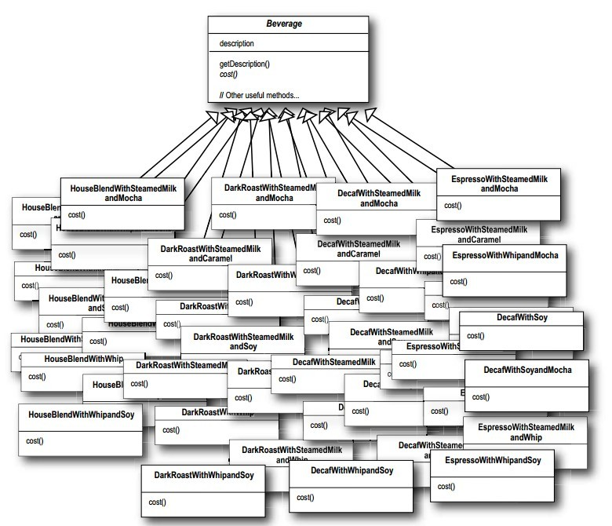
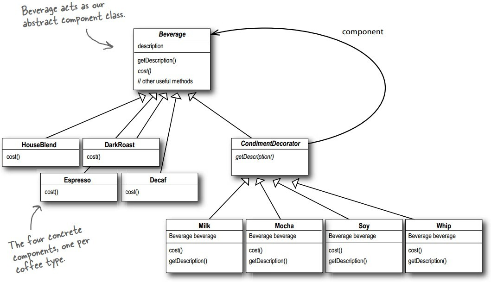

浅谈设计模式三: 装饰器模式(Decorator)
Table of Contents
实例
星巴克以咖啡文明，现在为它设计它的咖啡订餐系统。
- 先定义一类饮料的基类
Beverage，为不同咖啡做好一个接口。 - 每种不同的咖啡继承这个基类，覆盖各自的特性，比如描述，价格等。
每种咖啡都有很多中附加，比如拿铁咖啡就有，加糖拿铁，加奶拿铁，加奶加糖拿铁等等。所以按照上面的设计来设计咖啡订餐系统，那么整个系统类结构如下：

每种咖啡不同的附加组合导致太多类。
装饰器模式(Decorator)
目的
为一个对象动态的附加额外的职责。装饰器（Decorators)提供除了用子类的另外一种灵活的扩充功能方法。
实现
- 定义组件抽象接口和具体组件
1.定义组件抽象接口：咖啡和装饰器的基类
class Beverage { public: Beverage(); virtual ~Beverage(); virtual string description(); virtual double cost() = 0; protected: string description_; };
2.定义不同的组件：不同类型的咖啡
class DarkRoast : public Beverage { public: DarkRoast(); virtual ~DarkRoast(); virtual double cost(); };
- 定义抽象装饰器和具体装饰器
装饰器和被装饰的对象必须拥有相同的基类。
1.定义装饰器抽象接口（继承于组件抽象接口）：装饰器的基类
class CondimentDecorator : public Beverage { public: virtual ~CondimentDecorator() {} virtual string description() = 0; };
2.定义不同的装饰器：不同咖啡的配料维持组件对象的一个引用，并定义与组件接口一致的接口。
class Milk : public CondimentDecorator { public: explicit Milk(Beverage *beverage); virtual ~Milk(); virtual string description(); virtual double cost(); private: Beverage *beverage_; };
- 整合到一起
Beverage *beverage2 = new DarkRoast(); beverage2 = new Mocha(beverage2); beverage2 = new Mocha(beverage2); beverage2 = new Whip(beverage2); cout << beverage2->description() << " $" << beverage2->cost() << endl;
- 总的框架

总结
装饰器模式(Decorator)结构

组成
- 抽象组件（Component）定义一个对象接口，使得装饰对象能动态加入到组件中。
- 具体组件（ConcreteComponent）定义一个能附加职责的类。
- 抽象装饰器（Decorator）维持组件对象的一个引用，并定义与组件接口一致的接口。
- 具体装饰器（ConcreteDecorator）添加职责给组件。
应用场景
- 为独立的对象动态并透明的添加职责，也就是，不影响其他对象。
- 处理能收回的职责。
- 当不能通过子类来扩充时。有时候一大堆独立的扩充是可能的，但将激增子类来支持每种扩充间的组合。或者一个类的定义可能被隐藏或不能用于生成子类。
缺点
- 装饰器和它的组件不是一样的。一个装饰器扮演着透明的附加。但是从对象标识的角度来看，一个被装饰的组件和组件本身并不一致。所以当你使用装饰器时，不应该依赖对象标识。
- 许多小的对象。一个使用装饰器的设计经常导致系统被许多类似的小的对象所组成。这些小的对象仅仅不同在它们内在的关联，不是它们的类或参数的值。虽然这些系统很容易被熟知他们的人定置，但它们很难被了解和调试。